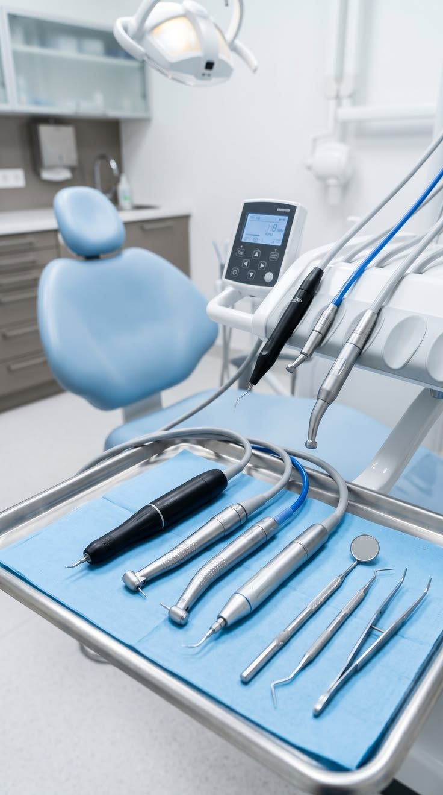
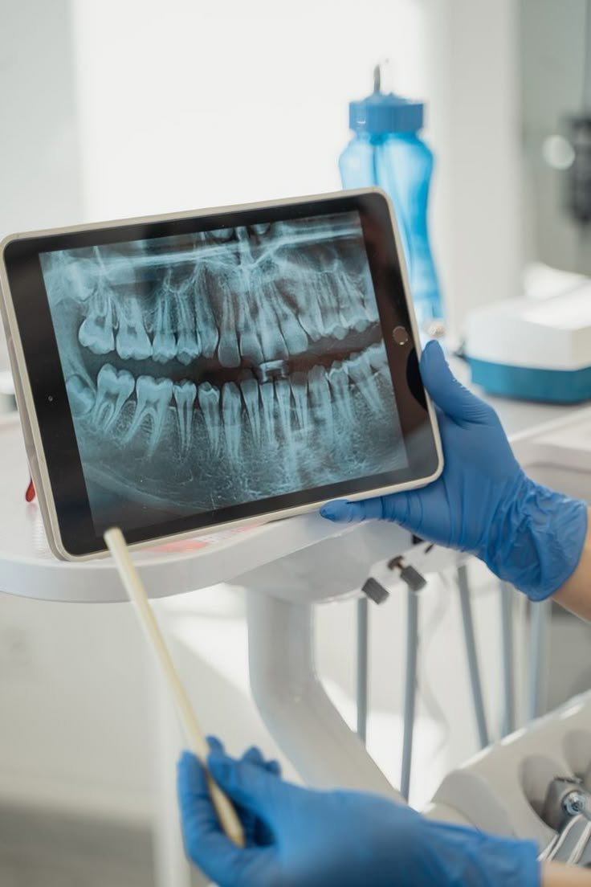
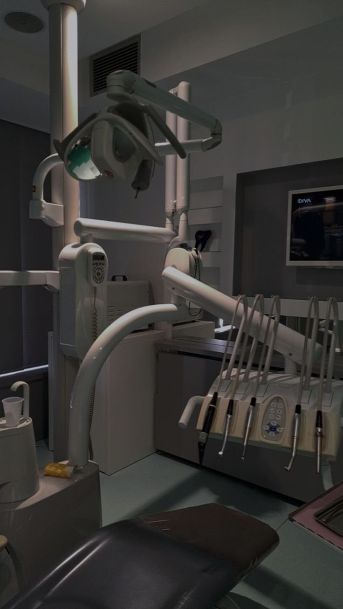

Odontologia com atenção aos detalhes
Seu sorriso merece um cuidado especial.
Odontologia com atenção aos detalhes, cuidado personalizado e foco na saúde e na estética do sorriso.


Um consultório pensado para você se sentir à vontade.
Cada consulta começa por escutar o que você sente e o que deseja para o seu sorriso. A partir daí, explicamos as opções com clareza, respeitando o seu tempo e as suas decisões.
Trabalhamos com equipamentos modernos, instrumentos esterilizados e um ambiente tranquilo, para que o cuidado com a saúde bucal seja simples e confortável.
Tratamentos
Da prevenção à estética, com planejamento individual para cada paciente.
Avaliação e prevenção
Exame clínico completo, limpeza e orientação para manter a saúde bucal em dia.
Restaurações
Recuperação de dentes com cárie ou fraturas, com resinas na cor natural do seu dente.
Clareamento dental
Sorriso mais claro com acompanhamento profissional e respeito ao esmalte.
Facetas e lentes de contato
Ajustes de forma, cor e alinhamento para um resultado natural.
Implantes e reabilitação
Reposição de dentes com planejamento por imagem e acompanhamento próximo.
Ortodontia
Alinhamento dos dentes e correção da mordida para crianças e adultos.

Equipe e tecnologia a serviço do diagnóstico.
Nossos profissionais usam exames de imagem para explicar cada caso na tela, junto com você. Entender o que está acontecendo ajuda a decidir com segurança.
- Radiografias e tomografia para um planejamento preciso
- Microscopia clínica em procedimentos de detalhe
- Explicação clara de cada etapa e de cada opção
O que você encontra aqui
Atenção ao detalhe
Cada procedimento é planejado com calma e executado com precisão.
Atendimento personalizado
Seu plano de tratamento considera sua rotina, seu orçamento e seus objetivos.
Ambiente acolhedor
Espaço silencioso, iluminação suave e equipe atenta ao seu conforto.
Biossegurança
Materiais esterilizados e protocolos rigorosos de higiene em todo atendimento.
A clínica por dentro



Agende sua consulta
Conte pelo WhatsApp o que você precisa e escolha o melhor horário. Respondemos em horário comercial.
Falar pelo WhatsApp- Endereço
- Rua Exemplo, 123 — Franca, SP
- Horário
- Segunda a sexta, 8h às 18h
- Como chegar
- Abrir no Google Maps